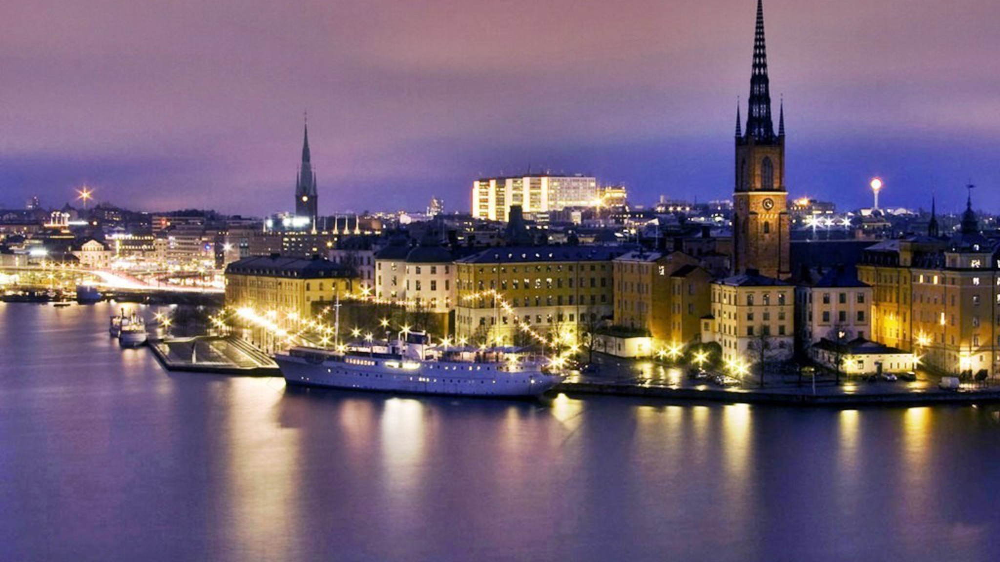
Stockholm, İsveç'in başkenti ve en büyük şehri. Stockholm, Finlandiya Körfezi'nin karşısındaki Baltık Denizi'nin kolu olan Mälar Gölü ve Salt Bay'in ortasinda bulunmaktadır.
STOCKHOLM HAKKINDA GENEL OLARAK
Stockholm, İsveç'in başkenti ve en büyük şehri. Stockholm, Finlandiya Körfezi'nin karşısındaki Baltık Denizi'nin kolu olan Mälar Gölü ve Salt Bay'in ortasinda bulunmaktadır.
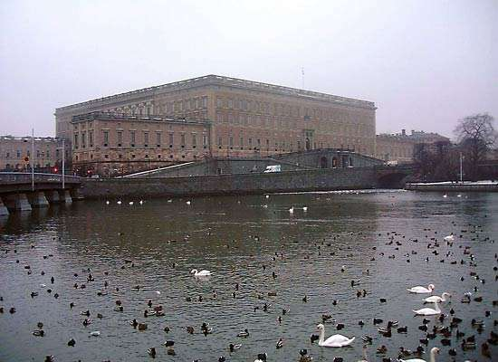
Şehir, Uppland ve Södermanland anakaralarının yanı sıra çok sayıda ada üzerine inşa edilmiştir. Bulunduğu yer sayesinde, Stockholm dünyanın en güzel başkentlerinden biri olarak kabul edilir.
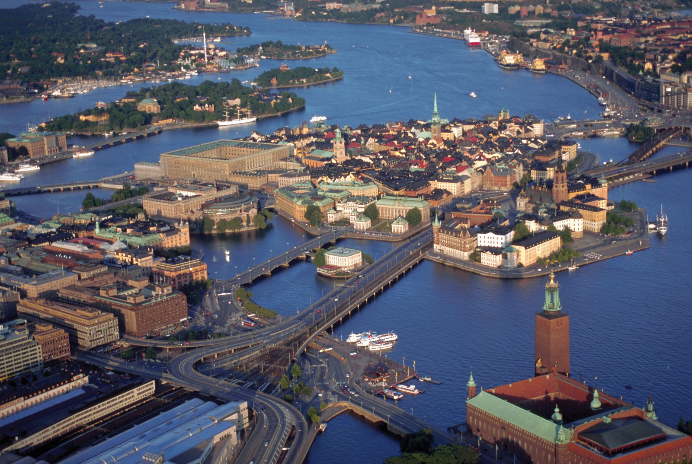
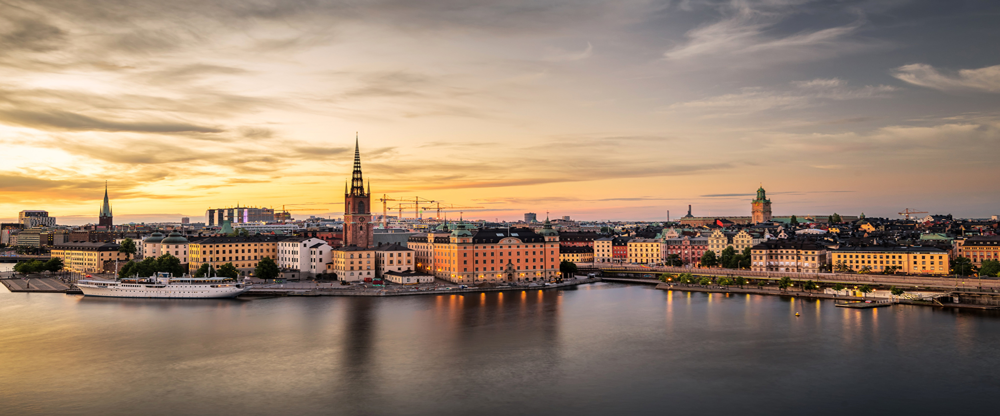
İskandinavya genelindeki pahalılık Stockholm‘de de kendisini fazlasıyla hissettiriyor. Eğer bu durumdan etkilenmek istemiyorsanız Stockholm Pass satın alıp ziyaretlerinizi indirimli fiyatlarla gerçekleştirebilirsiniz. Toplu taşıma ağından ücretiz yararlanabilmeniz içinse indirim kartına ek olarak ulaşım pasosu edinmeniz gerekiyor.Gezilecek bazi yerler.
STOCKHOLM GEZILECEK YERLER
İskandinavya genelindeki pahalılık Stockholm‘de de kendisini fazlasıyla hissettiriyor. Eğer bu durumdan etkilenmek istemiyorsanız Stockholm Pass satın alıp ziyaretlerinizi indirimli fiyatlarla gerçekleştirebilirsiniz. Toplu taşıma ağından ücretiz yararlanabilmeniz içinse indirim kartına ek olarak ulaşım pasosu edinmeniz gerekiyor.Gezilecek bazi yerler.
1.Gamla Stan (Eski Şehir) Stortorget Meydanı
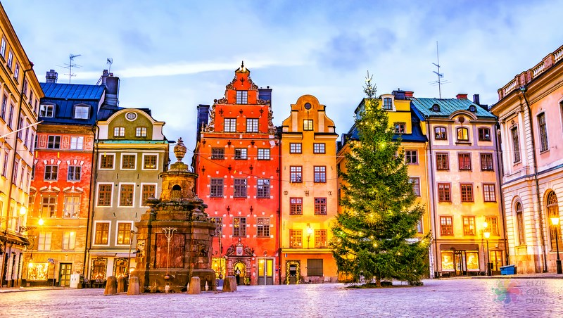
2.Vasa Muzesi
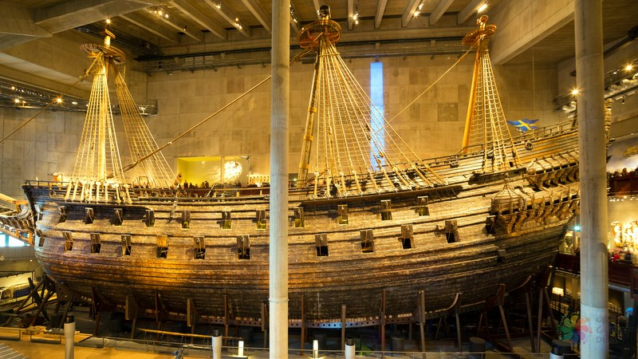
3.Stockholm Sarayi
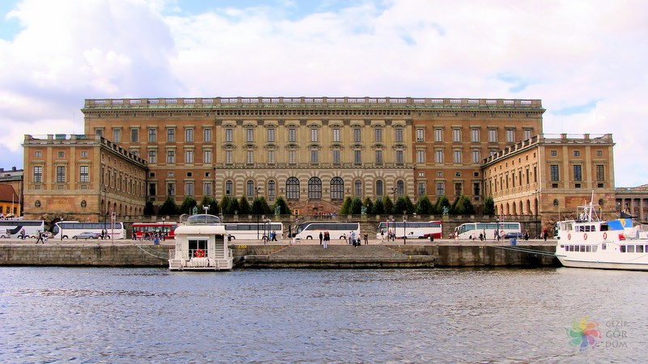
4.DAHA FAZLASI ICIN SLIDER'A TIKLAYIN.
 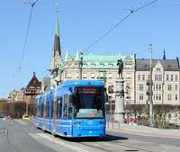
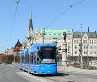 
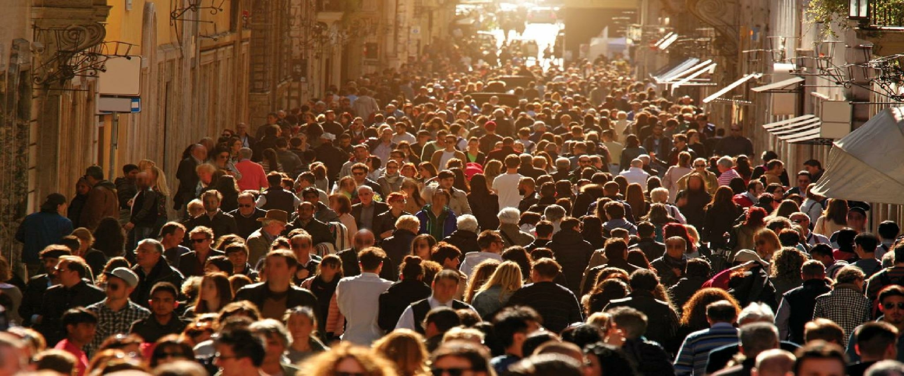
Stockholm tahminen 962.154 nufusu olan bir sehirdir
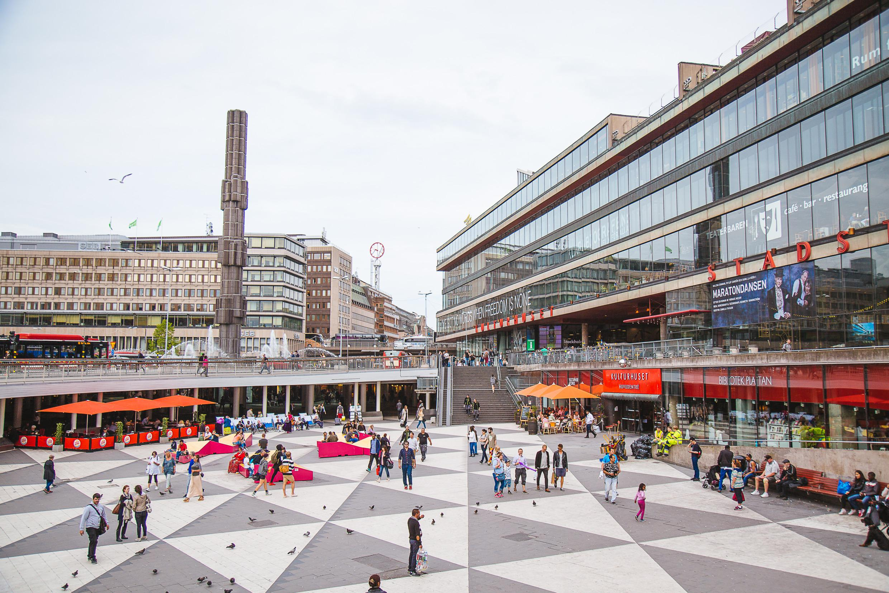
STOCKHOLM NUFUSU
Stockholm tahminen 962.154 nufusu olan bir sehirdir
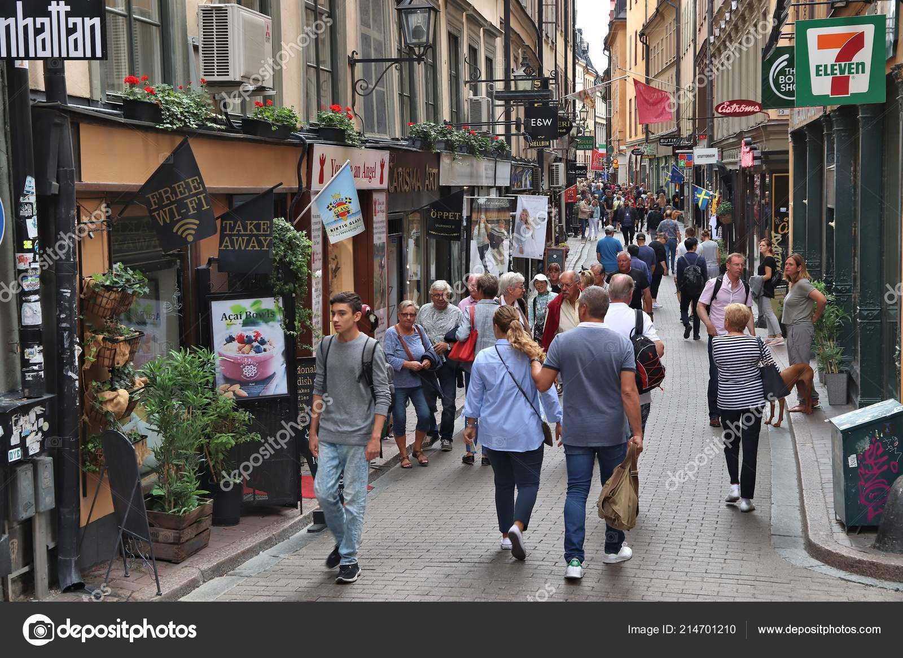
Gecmise donuk nufus degisikliligini,gelecekte tahmini ne kadar nufusa sahip olacagi hakkinda bilgi almak icin slide'a tiklaya bilirsiniz.Detayli bilgi almak icin ayricaBURAYA tiklaya bilirsiniz
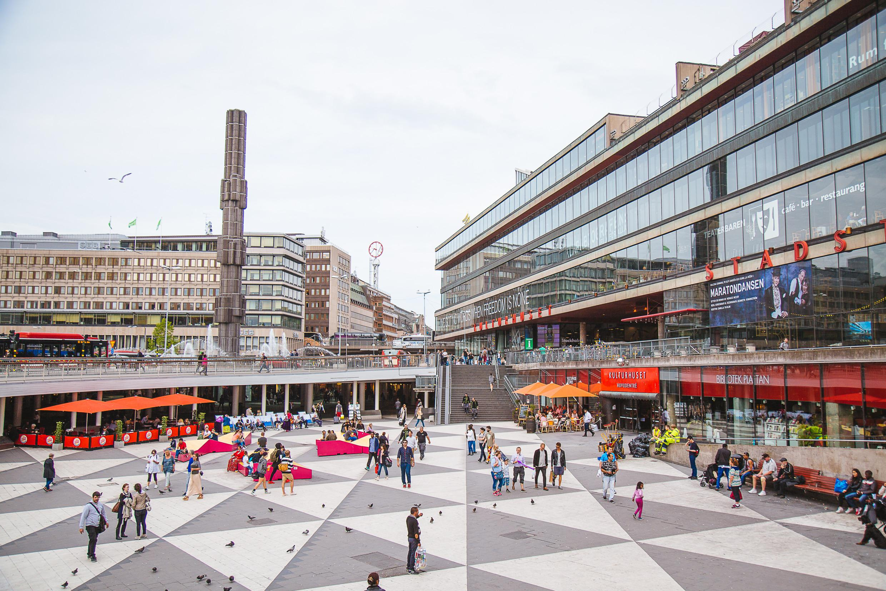
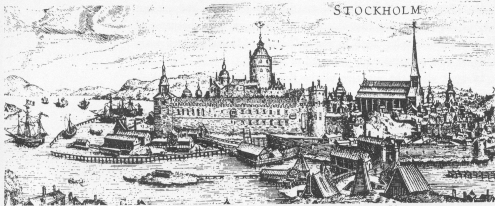
471'de Danimarka kralı Christian I, isyancı Sten Sture'u bastırmaya çalışırken Stockholm’ü kuşattı, ancak 5000 kişilik ordusu, Brunkeberg Savaşı’ndaki şehir duvarlarının hemen dışındaki İsveçliler tarafından yönlendirildi. şimdi Vasagatan, Kungsgatan ve Sergels Torg). Danimarka'nın Kopenhag'a çekilmesinden sonra bile sendikacılar ve ayrılıkçılar arasındaki sorun devam etti. Şehirdeki burghers, piskoposlar ve soyluların Stockholm'deki Danimarkalı Kral II. Christian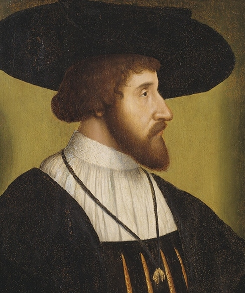
Previous
Next